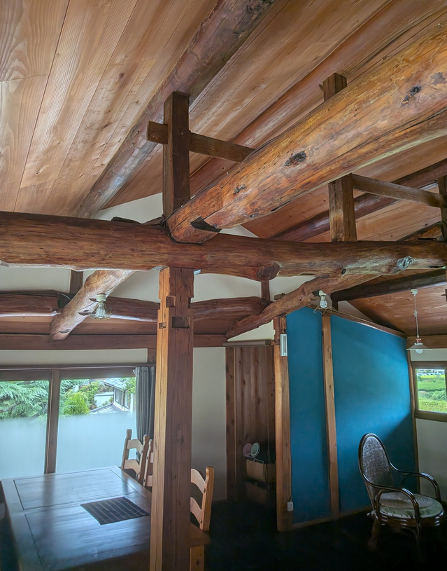

京都府和束町に位置する古民家「風和里（ふわり）」のホームページです。現在、この古民家の利活用について検討しております。
電話番号：090-5252-8115
メール：huwari@mailfence.com
2025.9.2からカウント開始
・風和里は、築80年を超える古民家を1年かけて手入れし、2018年7月に民泊施設として生まれ変わりました。現在、民泊事業は停止しておりますが、今後は民泊とは異なる形での利活用を検討しております。
・huwari is a traditional house that is more than 80 years old. After being carefully maintained for one year, it was reborn as a guesthouse in July 2018. At present, the guesthouse business has been completely suspended, but the building remains in good condition, and we are considering ways to make use of it in the future in forms other than a guesthouse.
・二階の部屋を改装した時には、昔ながらの低い天井を取り外し、梁をむき出しにして開放感あふれる空間にしました。この広い空間は元は4つの部屋に分かれていたのです。
所在地：京都府相楽郡和束町南大林11
・JR加茂駅 から「和束町小杉行き｣バス乗車「和束山の家」バス停下車 徒歩10分